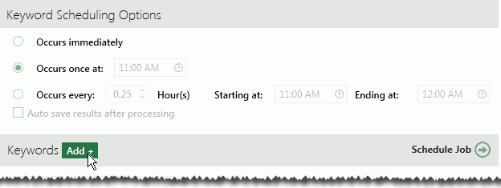

Getting started:
-
Start Eclipse and log in as an Eclipse administrator.
-
Open the case for which keyword lists are being created.
-
In the Case View pane, click Case Administration, and then Keyword Management.
In the Case
Administration tab, click  .
.
In the Settings area, enter a List Name (up to 85 characters) and optionally Notes (up to 500 characters). Alphanumeric, spaces, and/or underscore characters can be used.
In the Scheduling area, select the frequency and time of processing of the keyword list:
|
Option |
Description |
|
Occurs immediately |
The list will be processed one time, immediately after the list is completed (per the following steps). |
|
Occurs once at (time) |
Run the list automatically (if case changes have occurred) once a day at the specified hour. For example, re-process the list every day at 10 p.m. Enter or click to enter/choose the time. |
|
Occurs every... Starting/Ending at (times) |
Run the list automatically (if case changes have occurred) at a specified interval, 0.25 to 23.75 hour(s), over the specified time period. Enter or use the up/down arrows to select the interval, and enter the starting and ending hours or click to select them. For example, rebuild the index every two hours between 7 a.m. and 7 p.m. (i.e., when reviewers are at work): |
|
|
|
|
Auto save results after processing |
Select this option if you want to create the keyword tags and field after the keyword list is processed. You can also create them separately, at a later time. (See Create Keyword Tag Group and Field.) |

Click Apply. The newly created (empty) list is now included and selected in the left pane of the Case Administration tab.
In the Keywords area, click Add as shown in the following figure.

In the resulting dialog box, enter or paste (Ctrl+V) the needed list of search terms and phrases, one term or phrase per line.
|
|
Note: Search phrases of over 250 characters will be truncated. |

When all keywords have been added to the list, click Add in the dialog box.
Click the Schedule Job button. The job will be run at the scheduled time.
|
|
Note: This button is not available if the keyword list status is Completed (indicating the search has been run and results are up to date). |
If your job is scheduled for a time other than immediately, you can check the status in the Eclipse Schedule Manager as explained next.
Repeat these steps to create and schedule other keyword lists.